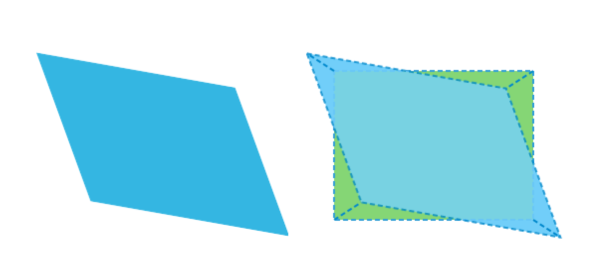

CSS are trei funcţii diferite prin care se poate efectua înclinarea elementelor, şi anume:
Funcţia skewX() înclină elementul pe axa x. Funcţia skewY() face acelaşi lucru, dar pe axa y, în timp ce funcţia skew() poate înclina elementul pe ambele axe.
Exemplul de utilizare a acestei transformări:
#transformed{
transform: skew(20deg, 10deg);
}
